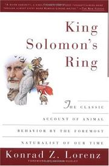

King Solomon's Ring: New Light on Animal Ways
Book·Konrad Lorenz, 1949·所罗门王的指环

Lorenz uses animals he kept, such as greylag geese and jackdaws, to explain imprinting and animal behavior. It is the most readable introduction to ethology.
- Author
- Konrad Lorenz
- Year
- 1949
- Difficulty
- Beginner
- Kind
- Overview
- Schools
- Ethology
- Core theories
- Imprinting and Sensitive Periods
Editions
- Chinese edition 《所罗门王的指环》 (奥)劳伦兹 · tr. 游复熙 / 秀光容 · 和平出版社 · 1998 Douban 9.2 (2247 ratings) Douban page ↗
- English edition King Solomon's Ring: New Light on Animal Ways Konrad Lorenz (trans. Marjorie Kerr Wilson) · Routledge Classics · 2002 Open Library ↗